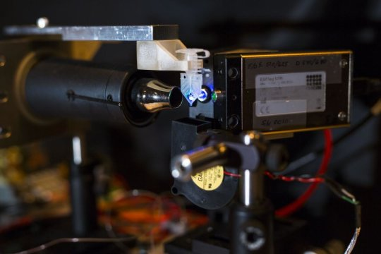

DNA duplicator small enough to hold in your hand

This possibility is raised by a fundamentally new method for controlling a powerful but finicky process called the polymerase chain reaction. PCR was developed in 1983 by Kary Mullis, who received the Nobel Prize for his invention. It is generally considered one of the most important advances in the field of molecular biology because it can make billions of identical copies of small segments of DNA so they can be used in molecular and genetic analyses.
Vanderbilt University biomedical engineers Nicholas Adams and Frederick Haselton came up with an out-of-the-box idea, which they call adaptive PCR. It uses left-handed DNA (L-DNA) to monitor and control the molecular reactions that take place in the PCR process. Left-handed DNA is the mirror image of the DNA found in all living things. It has the same physical properties as regular, right-handed DNA but it does not participate in most biological reactions. As a result, when fluorescently tagged L-DNA is added to a PCR sample, it behaves in an identical way to the regular DNA and provides a fluorescent light signal that reports information about the molecular reactions taking place and can be used to control them.
In order to test their idea, Adams and Haselton recruited Research Assistant Professor of Physics William Gabella to create a working prototype of an adaptive PCR machine and then they tested it extensively with the assistance of biomedical engineering undergraduate Austin Hardcastle. A description of the technique and their test results are described in the paper "Adaptive PCR Based on Hybridization Sensing of Mirror-Image L-DNA" published in the journal Analytical Chemistry. Although the technology is generally considered to be mature, PCR machines have proven to be complicated to operate and hypersensitive to small variations in the chemical composition of samples and environmental conditions. That is largely because there has been no direct way to monitor what is taking place at the molecular level. As a result, the adaptive approach for controlling the PCR process promises to make it simpler to operate, improve its reliability, reduce its sensitivity to environmental conditions and shrink it from desktop to handheld size. As a consequence, it could free PCR from the laboratory setting and allow it to work in the field or at the bedside where it could be used to identify different diseases by their DNA signatures.
The difficulty lab technicians have operating current PCR technology was captured by Ernesto Llamas, a Ph.D. student at the Center for Research In Agricultural Genomics in Barcelona, who draws cartoons about science on his Sketching Science Facebook page. In a cartoon titled, "PCR Protocol," he shows a researcher running a sample through a PCR machine. The panels are titled "get the reagents; prepare the mix; set up conditions; analyze the gel; negative result; cry." "PCR machines are pretty finicky," said Adams, giving an example: "We have three commercial PCR machines in our lab. For awhile one of them wasn't working. When we put identically prepared samples in all three machines, two of them worked and one didn't. As I was discussing this problem on the phone with one of the company's technicians, she asked me if the problem machine was within eight inches of a wall. It turned out it was. According to the technician the wall was interfering with the air flow to the machine. She was right because when I moved it out from the wall it began working properly!" Laboratory technicians have found methods to compensate for these problems. The machines are kept in temperature-controlled rooms. They purify the DNA samples so they have a uniform chemical composition. Even so, it can take operators several weeks to optimize the machines to run samples from new sources. And, even when optimized, they run samples in triplicate, just in case one of them fails. To appreciate Adams and Haselton's innovation, first you need to understand how PCR works. There are five core "ingredients" required for PCR: a DNA template to be copied; primers, short stretches of DNA that initiate the PCR reaction that are designed to bind to either side of the section of DNA that you want to copy; DNA nucleotide bases, the building blocks of DNA that are needed to build new strands of DNA; DNA polymerase, a special enzyme that builds new DNA strands; and a buffer that provides the proper chemical conditions for the reaction.
A sample containing these ingredients is first heated almost to its boiling point, the temperature at which double-stranded DNA separates into two single strands: a process called denaturing. Next, the sample is cooled to a temperature where the primers attach to the single strands: a process called annealing. Once the annealing is complete, the temperature begins to rise and the DNA polymerase automatically begins making new strands of double-stranded DNA using the single strands as templates: a process called elongation. The end result is two exact copies of the original double-stranded DNA.
When the process is complete, the cycle repeats: The temperature ramps up again to the sample's boiling point, causing the two double-stranded DNA to separate into four single strands which act as templates. In this fashion, the two copies of DNA become four copies, four copies become eight copies and so on. The cycle is repeated as many as 30 to 40 times, producing more than a billion exact copies of the original DNA segment.
Temperature and chemical composition are the critical factors in the PCR process. The requirement to heat the sample to precise temperatures has led to PCR machines with sophisticated heating systems and heavy insulation. Nevertheless, small changes in air circulation and room temperature can throw them out of kilter. Similarly, variations in the chemical composition of the samples can significantly change the temperatures required for the various steps. For example, differences in levels of salts, sugars and alcohols -- chemicals often used in sample preparation -- all can alter the temperature at which the DNAs attach and dissociate. As a result, technicians must go through an extensive calibration process to optimize the chemicals and cycle temperatures, and then precisely maintain those conditions for each new sample. Adaptive PCR sidesteps all these variables by relying on the fluorescent L-DNA to determine the ideal cycle temperatures for annealing and denaturing. L-DNA sequences are commercially available. So the first step is to order L-DNA with the same sequence as the right-handed DNA that you want to amplify along with left-handed primers. The L-DNAs are ordered with a fluorescent dye on one strand and a "quencher" on the other strand. The quencher suppresses the fluorescence of the dye. So, as the L-DNA strands separate in the denaturing step, the quencher and dye also separate which causes the fluorescence level in the sample to increase. By analyzing the rate of change of the fluorescent level, a microprocessor can determine when virtually all of the DNA has separated.
Similarly, a dye quencher is attached to the left-handed primers. So as the process moves into the annealing step and the primers attach to the L-DNA strands, the quenchers they carry begin suppressing the fluorescent dye on the L-DNA. This provides a dimming signal that can be analyzed to identify the point when the primers are attached to virtually all the DNA strands. The amount of L-DNA in the sample remains constant from cycle to cycle because it does not participate in the amplification step. The researchers report that experiments with the prototype system have demonstrated that the technique duplicates the results of conventional PCR machines in controlled conditions and can efficiently amplify DNA under conditions that cause standard PCR to fail. "These advantages have the potential to make PCR-based diagnostics more accessible outside of well-controlled laboratories, such as point-of-care and field settings that lack the resources to accurately control the reaction temperature or perform high quality sample preparation."